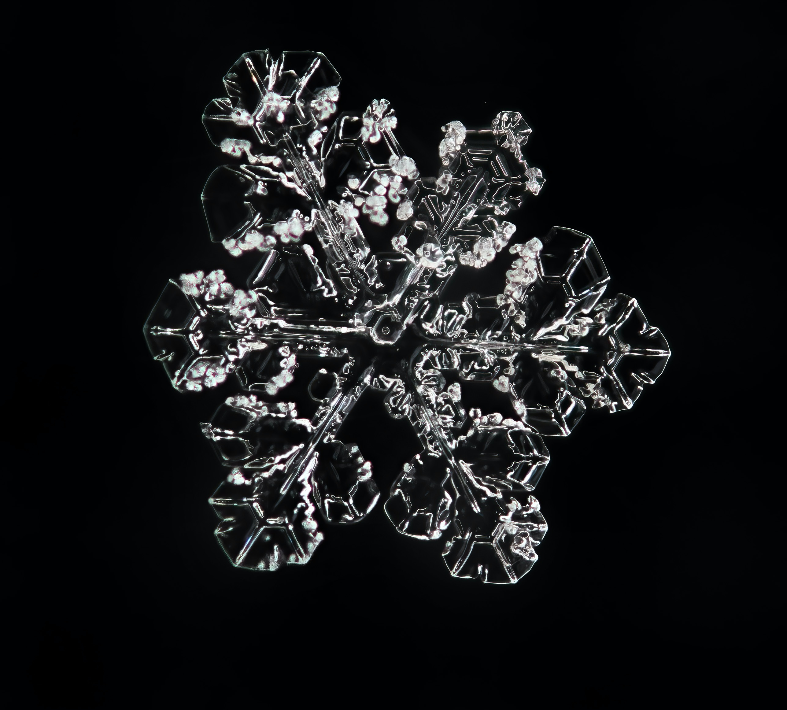
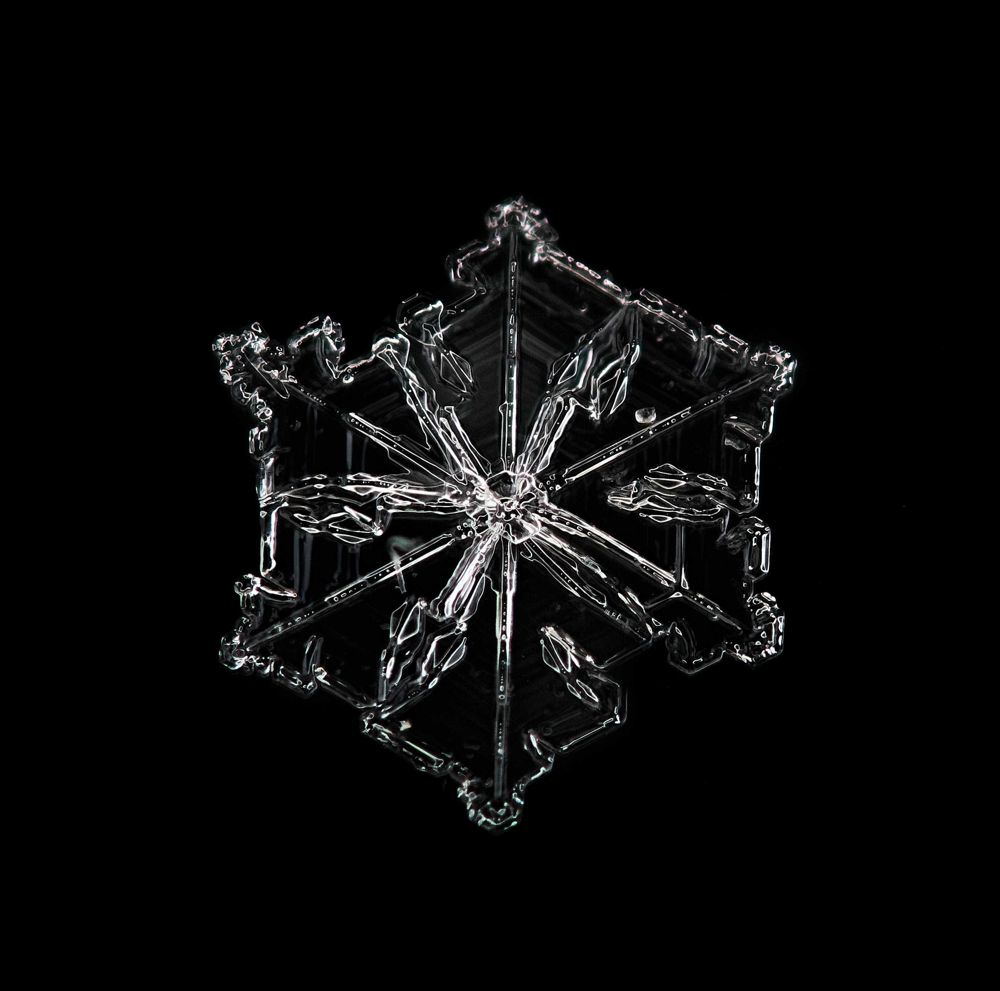

Les Flocons de Neige et leur Géométrie fascinante
La neige, vous en avez probablement déjà observé durant votre vie, mais avez vous vraiment vu à quoi ressemblent les flocons de neige ?
Ces petites structures cristallines fascinantes changent de forme en fonction de la température de l'air qui les enveloppe. En effet, si nous avons l'habitude de voir des flocons de cette forme il est important de noter qu'en réalité, il existe une infinité de formes de flocons de neige existant sur terre et ces formes varient en fonction de l'humidité ainsi que de la température de l'air mais globalement, on peut tous les rassembler en 7 catégories cristallines.
- de 0 à -4 °C, les flocons ont la forme d'assiettes minces hexagonales ;
- de -4 à -6 °C, ils ressemblent à des aiguilles ;
- de -6 et -10 °C, ils prennent la forme de colonnes creuses ;
- de -10 à -12 °C, ils se présentent comme des flocons à six pointes ;
- de -12 à -16 °C enfin, les flocons ont la forme d'une dendrite (branches présentent sur les extrémités des neurones)
Les formes de flocons les plus courantes se forment à ces seuils :

Globalement, depuis la formation de la terre, 1034 flocons de neige seraient tombés sur Terre et il est quasiment impossible de retrouver deux flocons de neige exactement identiques, peu importe l'endroit où l'on se trouve sur Terre. Lorsque les flocons se forment, leur parcours va être tumultueux. Ils sont tellement légers qu'ils vont se laisser transporter au gré des vents et, grâce à ce vent, les flocons n'auront pas exactement tous la même forme puisque certains se développeront plus vite car transportés par les vents et refroidis encore plus par ceux-ci et d'autres se développeront moins vite.
Ils finiront fatalement par devenir indissociables du reste des flocons sur le sol. Lorsque les flocons entrent en contact les un avec les autres, ils viennent se combiner pour former de la neige (celle avec laquelle nous avons tous joué étant enfant ou plus grand) ou un amas de glace cristallisée

Pour conclure, pour observer des flocons et aller jusqu'à les prendre en photo il faut un objectif macrophotographique (capable de prendre des photos de très près) et il faut prendre la photo au bon moment pour admirer ces fractales (objet mathématique qui présente une structure similaire à toutes les échelles) naturelles. Le moment propice à leur photographie s'avère être lorsqu'ils flottent dans l'air au gré du vent.